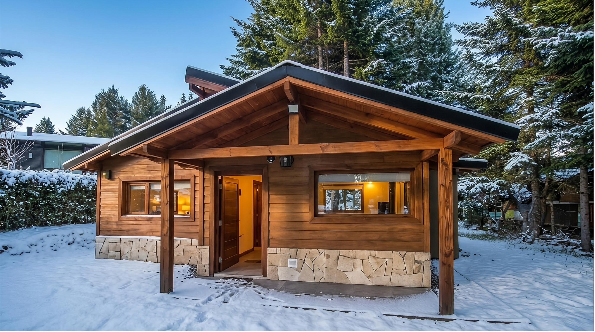
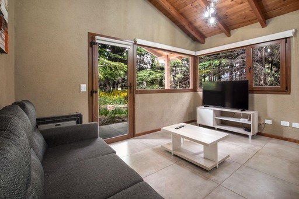
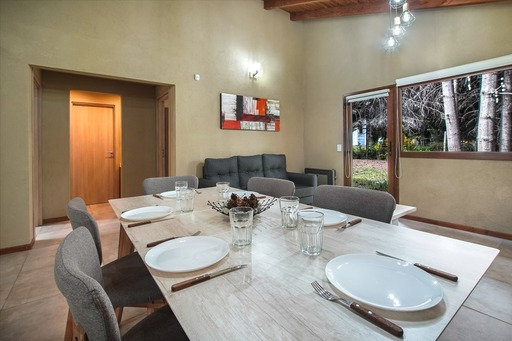
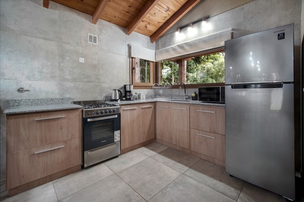
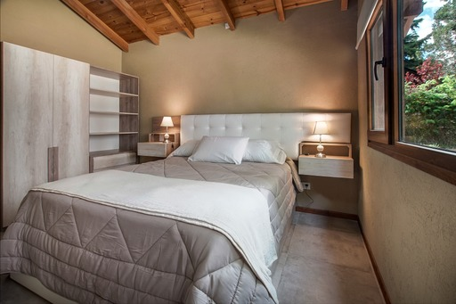
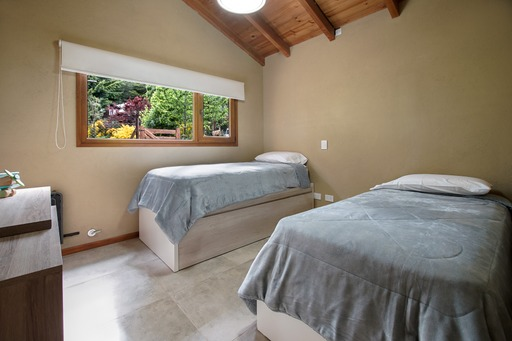
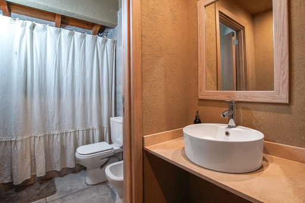
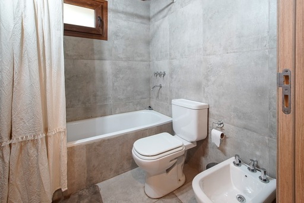
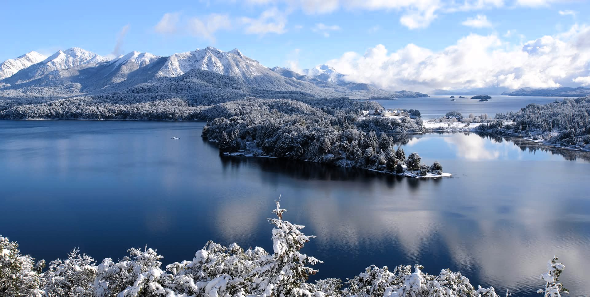

Galería
La cabaña, por dentro y por fuera.
Conocé sus ambientes, el fogón y el bosque que la rodea durante todo el año.










Galería
Conocé sus ambientes, el fogón y el bosque que la rodea durante todo el año.








